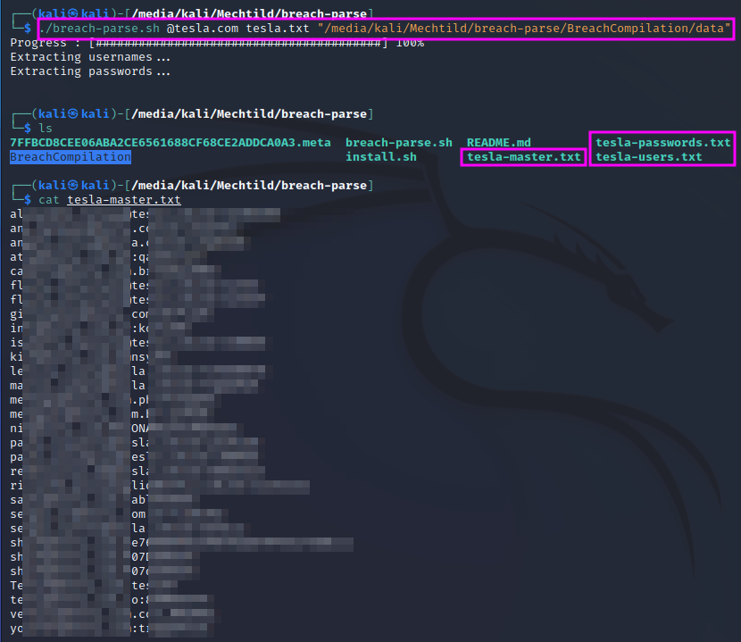

Gathering Breached Credentials with Breach-Parse
Finding user names and passwords in breached credentials is a very important step and part of every pentest.
TCM offers a bash script on his github page that can be used to filter a database with compromised user credentials for a specific domain name, e.g. @tesla.com. The results of this filtering can then be used to log in to a target host.
The database with breached credentials is more than 40 GB in size. It has to be downloaded from a torrent first, e.g. using rtorrent, which can be installed with sudo apt-get install rtorrent in Kali Linux. The torrent file is then downloaded with rtorrent '<torrent link>'.
The breached credentials are stored in multiple folders, which are traversed and scanned for the host domain, e.g. @tesla.com. The second command line parameter serves as the basis for the output file names. If the breach-parse git is not cloned into the /opt folder, you have to specify the location of the credentials as the third command line parameter.
In my case, I have used an old external harddisk (still with a mini USB connector) to store the huge amount of data. Running the script once to extract the @tesla.com credentials took about 45 minutes!
The results are stored in three files: one with only the usernames, one with only the passwords and one with username/password pairs, where username and password are separated by a colon.
The user credentials often stem from data breaches into services for which people used their company credentials as login credentials. TCM suggests to look for repeat offenders and to double-check the email address format against the format that has been identified in the email address hunting step. One can also look for similarities if several similar passwords show up for one email address. Perhaps the password has only been altered slightly, e.g. by changeing the capitalization. This kind of using known user names/email addresses and passwords is called credential stuffing. If this attempt is not successful, one can still try password spraying: trying arbitrary passwords against all user names in the search results.